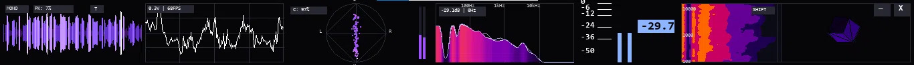

Audio Visualizer
Утилита для захвата и анализа системного звука в реальном времени. FFT, осциллограф, LUFS и 3D-визуализация на Pygame.

Возможности
Захват звука
WASAPI Loopback позволяет записывать системный звук без виртуальных кабелей.
Спектр (FFT)
Логарифмическая шкала частот и плавная интерполяция для точной визуализации.
Стереометр
Вектороскоп для оценки стереопанорамы с фиолетовыми индикаторами L/R.
3D-Куб
Вращающаяся 3D-модель, реагирующая на амплитуду входящего сигнала.